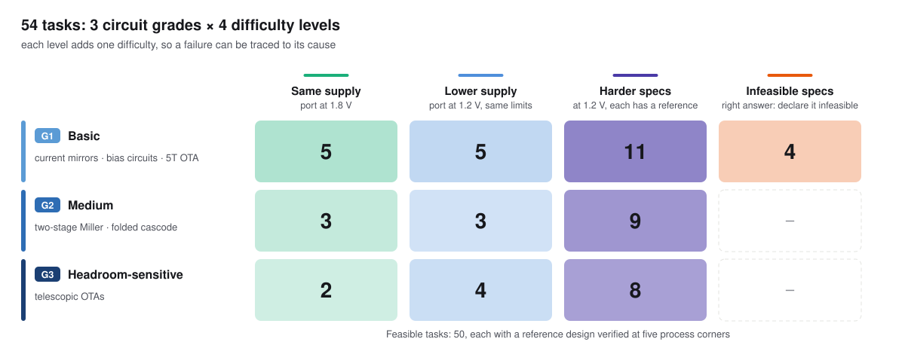
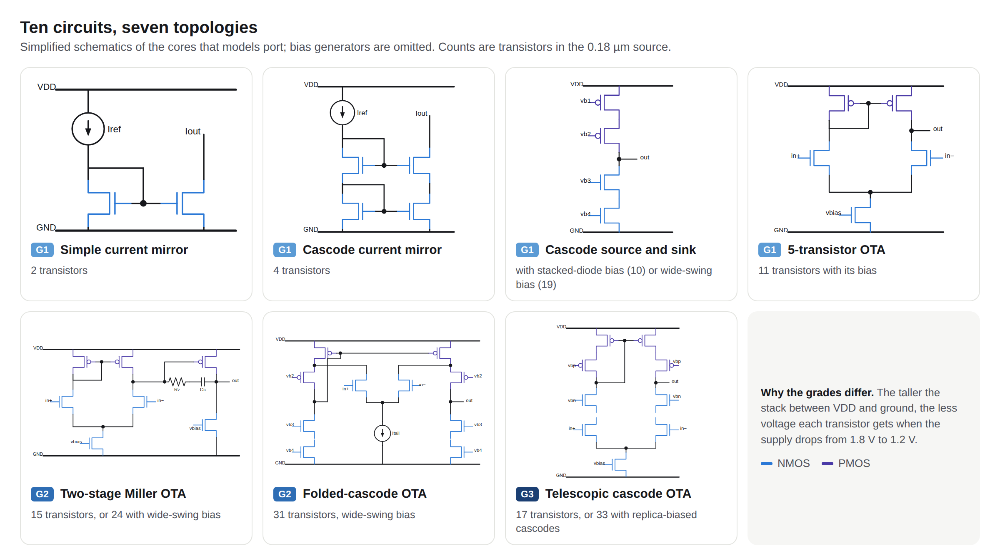
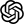

AnalogPortBench: Benchmarking LLMs on Analog Circuit Porting

Abstract
Analog circuit design still relies heavily on expert knowledge, and porting proven designs to new process nodes is a recurring bottleneck. A lower supply shrinks the headroom of every transistor, so a working topology may need re-design or may no longer meet its specifications at all. Large language models (LLMs) have begun to generate and size analog circuits, but existing benchmarks stay within one process node and use tasks that always have a solution.
We introduce AnalogPortBench, a benchmark of 54 tasks that port ten circuits, from current mirrors to telescopic amplifiers, from a 0.18 µm process to the open SKY130 process. Tasks range from a direct port through a reduced supply and harder specifications to infeasible ones, and every feasible task has a reference design verified at five process corners. Evaluating six frontier LLMs at two reasoning levels, with and without simulation feedback, we find that models port simple circuits but rarely re-design headroom-sensitive amplifiers, seldom recognize infeasible specifications, and gain more from simulation feedback than from more samples or reasoning.
Benchmark
Ten circuits form three grades by how much of the supply the topology consumes and how much design effort it requires. Each circuit is ported in up to four tiers, and each tier adds one difficulty, so a failure can be traced to its cause.


Results
| Model | T1 | T2 | T3 | T1–T3 | T4 flagged ↑ | False alarms ↓ | Resampling | Sim. feedback |
|---|---|---|---|---|---|---|---|---|
| 53.3 | 33.3 | 6.0 | 22.0 | 10/12 | 0/150 | 32 | 52 | |
 GPT-6.1-sol | 40.0 | 25.0 | 8.3 | 18.7 | 2/12 | 0/150 | 30 | 56 |
| GPT-6-sol | 40.0 | 22.2 | 0.0 | 13.3 | 6/12 | 0/150 | 20 | 34 |
| 30.0 | 16.7 | 0.0 | 10.0 | 5/12 | 4/150 | 12 | 26 | |
| GPT-6-luna | 20.0 | 19.4 | 0.0 | 8.7 | 2/12 | 1/150 | 12 | 12 |
| 13.3 | 13.9 | 0.0 | 6.0 | 9/12 | 20/150 | 8 | 18 | |
| Reference designs | 100 | 100 | 100 | 100 | – | – | – | – |
Medium reasoning effort, 3 samples per task. Zero-shot pass rate (%) per tier and pooled over T1–T3; INFEASIBLE declared on the 12 answers to T4 tasks and on the 150 feasible answers; share (%) of the 50 feasible tasks solved in three tries by resampling or by simulation feedback. Best in bold, second underlined.